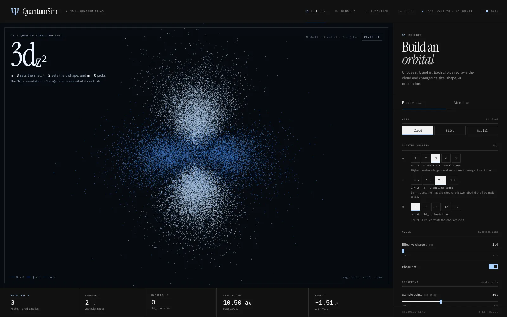
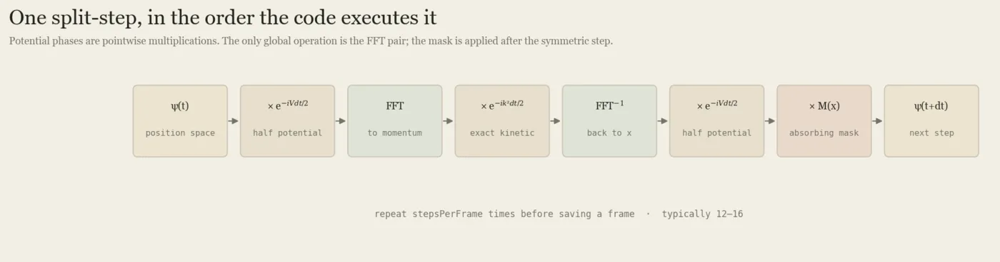
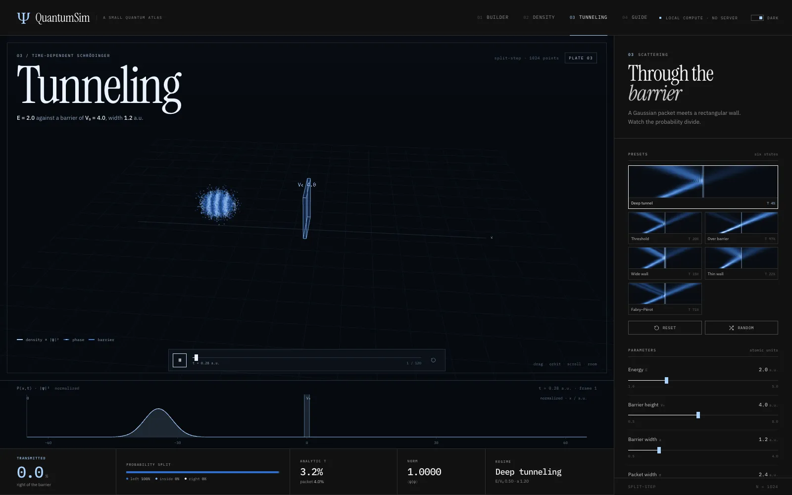
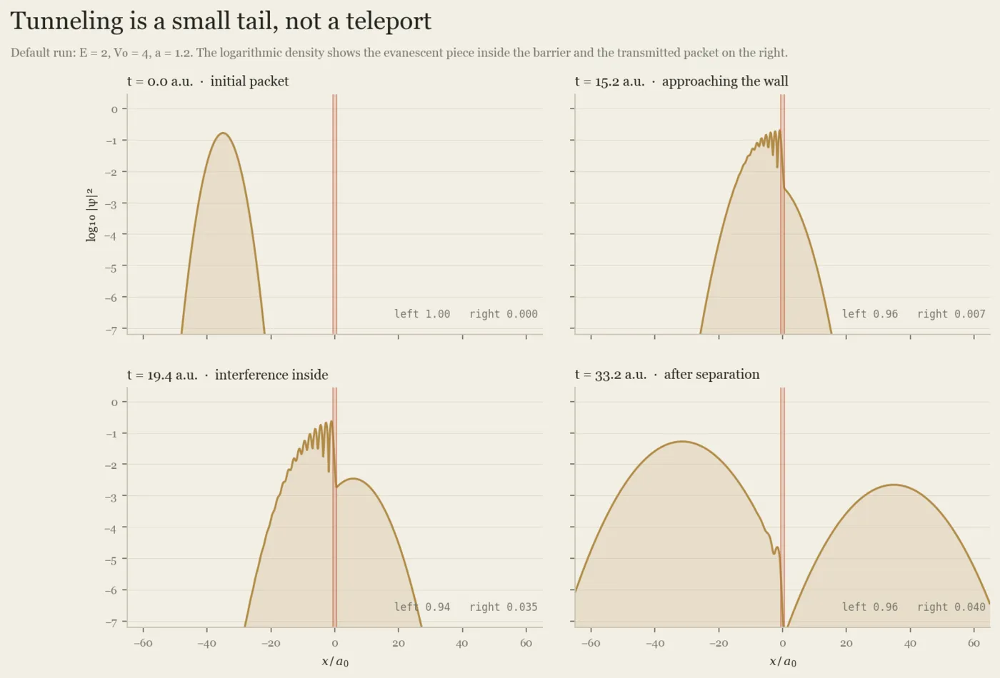
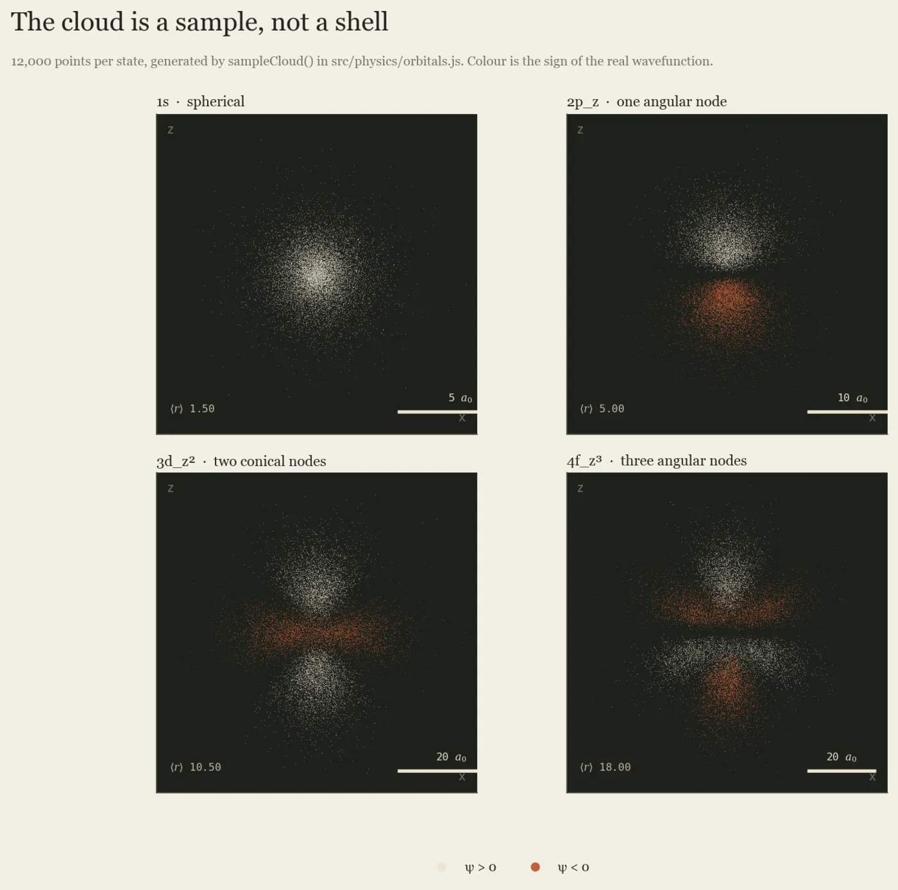

Case study 02 · Simulation · JavaScript
QuantumSim
How can you make quantum probability something you can explore?
- Status
- Working prototype
- Stack
- ES modules, Three.js r180, WebGL2
- Size
- About 6,600 lines plus a 1,600-line guide
- Last updated

What it is
In quantum mechanics you cannot say where an electron is, only how likely it is to be found in each place. That probability comes from the wave function ψ: the chance of finding the particle near a point is proportional to |ψ|² there. This is the Born rule.
QuantumSim turns that into three things you can play with in a browser: atomic orbitals as clouds of sampled points, a particle trapped in a square box, and a wave packet hitting a barrier and partly tunnelling through. A fourth page, the field guide, explains the physics and lists what the app does not model.
There is no server. Every number on screen is computed on the visitor's machine.
The maths
Orbitals. For a hydrogen-like atom, ψ separates into a radial part and an angular part. To draw a cloud, QuantumSim builds the cumulative distribution of the radial probability r²|R(r)|², picks a radius by inverting it with a binary search, then picks a direction by rejection sampling the angular part. Dense regions of dots are regions of high probability.
Tunnelling. The time-dependent Schrödinger equation (in units where ħ = m = 1) is
The potential term is simple in position space and the kinetic term is simple in momentum space. The split-step Fourier method takes advantage of that: half a step of potential, a Fourier transform, a full step of kinetic energy, an inverse transform, then the other half step of potential.

How the code is laid out
src/physics/orbitals.js: exact radial functions (generalised Laguerre polynomials), real angular shapes, the radial CDF and the sampler.src/physics/tdse.jsandfft.js: the split-step solver and a radix-2 FFT, on a 1,024-point grid.src/views/*.js: one view per route. Each owns its Three.js scene and disposes it on exit.docs/EXPLAINER.md: the field guide, with worked numbers taken from the code.
The kinetic step, from simulate() in tdse.js. ψ is stored as separate real and imaginary arrays, so multiplying by a phase is written out by hand:
// Full kinetic step in momentum space
fft(psiR, psiI);
for (let i = 0; i < N; i++) {
const r = psiR[i];
const m = psiI[i];
const pr = kineticHalfR[i];
const pi = kineticHalfI[i];
psiR[i] = r * pr - m * pi;
psiI[i] = r * pi + m * pr;
}
ifft(psiR, psiI);src/physics/tdse.js, lines 226 to 236

Physics with no DOM
The physics modules never touch the page. They take numbers and return arrays. The views do the drawing.
That separation is what makes the next section possible: the solver can be imported straight into Node and checked against a known answer, with no browser involved. It also means the field guide's figures come from the same functions the app runs, so the article cannot quietly drift away from the code.
Checking the solver
The README includes a sanity check. On November 6, 2026 I ran it again in Node with the default settings (packet energy 2, barrier height 4, width 1.2):
{ norm: '1.0000', packetT: '0.0404', planeWaveT: '0.0324', grid: 1024, frames: 121 }- Norm 1.0000: total probability is conserved, as it must be.
- Transmission 0.0404 vs 0.0324: about 4% of the packet gets through. The analytic number is for a single plane wave at exactly that energy. A real packet contains a spread of energies, and the higher-energy part tunnels more easily, so the packet's transmission should come out a little higher, and it does.

tdse.js.
orbitals.js for several quantum numbers.What it does not model
- The orbitals use a one-electron, hydrogen-like model with screened charge. They get the shapes and trends right, not real many-electron energies.
- Tunnelling is one-dimensional, single-particle, and uses an ideal rectangular barrier. The narrowest barrier preset is only marginally resolved by the grid.
- The 3D cloud on the tunnelling page is a visual aid; the simulation itself is 1D.
- There is no public hosted build yet. To try it, clone the repository and run
python3 -m http.server.
Next question: what does tunnelling look like in two dimensions, where a packet can go around an obstacle as well as through it?
Schrödinger's Equation for Dummies
Before building this I wrote a two-part explainer on where the equation comes from: Part I, the history, and Part II, decoding the equation.
Dependencies
Three.js r180 (MIT licence), vendored in the repository. Atomic reference data are standard tabulated values.